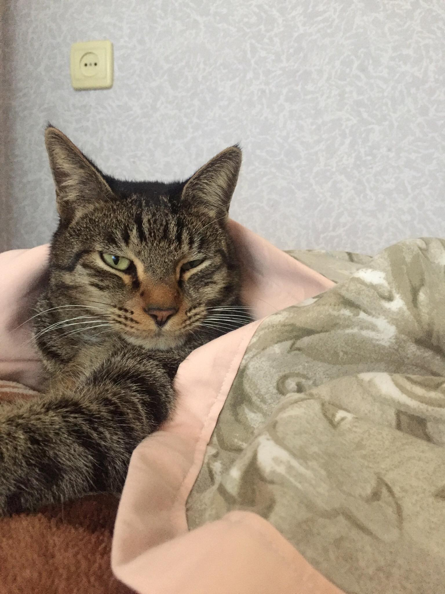
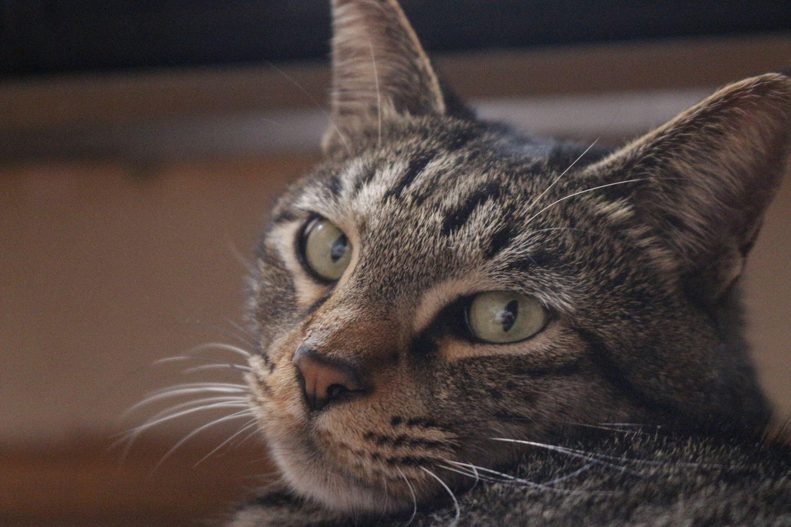
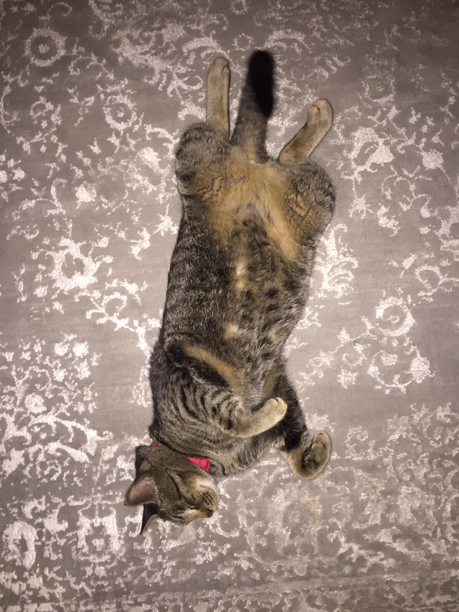
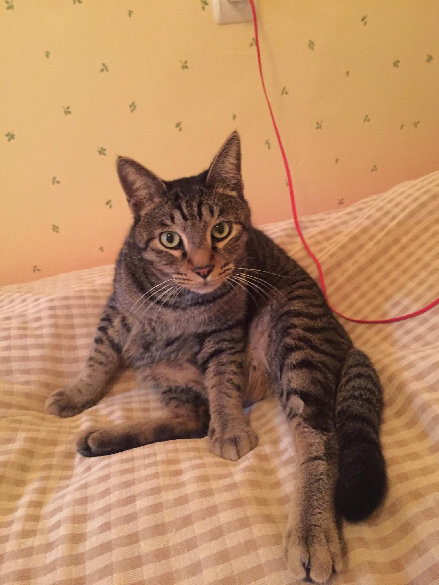

ეს ტომია, ჩემი ფისო, რომელიც ჩემს ოჯახში 2018 წელს შემოვიდა, ზუსტად იმ დღეს, როცა ბაბუაჩემი გარდაიცვალა. თავისით მოვიდა და ამიტომაც არის განსაკუთრებული. რადგან საიტის თემა თავისუფალი იყო, გადავწყვიტე, ორი სიტყვის დამეწერა ტომიზე.
ტომი 2018 წელს, დაახლოებით მაისის დასაწყისში დაიბადა, გამოდის, რომ ზოდიაქოს ნიშნით კუროა. ის სადარბაზოში ჩემს კარებთან არსაიდან აღმოჩნდა 2018 წლის 20 ივნისს, მის სახლში წაყვანას არ ვაპირებდი, ოჯახის წევრები, ბებია და დედა წინააღმდეგები იყვნენ, ვიცოდი. ამიტომ ჯერ მეზობელს ვთხოვე შეეფარებინა, რომელიც დამთანხმდა, მაგრამ იმავე საღამოს უკან ჩამოიყვანა, უკვე იმ მეზობლის დედამ, რომელმაც ჩხუბით შემატოვა ხელში. ტომიმ, ჩემდა საბედნიეროდ, გამკაწრა. აცრაზე ჩასვლის შემდეგ კი იძულებულები ვიყავით დავკვირვებოდით 10 დღე და სახლში გვყოლოდა. მას მერე მესამე წელი შესრულდება მალე, რაც ტომუსი ჩვენი ოჯახის წევრია, და ბებიაჩემი, რომელიც კატას ეშმაკისეულად მიიჩნევდა ახლა ბებოთი მიმართავს.
 მიუხედავად იმისა, რომ ტომი ჩემ ხელში გაიზარდა, მას მხოლოდ თავისი თავი და ბებიაჩემი უყვარს, რადგან ის ყოველ ნახევარ საათში აჭმევს, საკუთარ დიეტაზე ყავს მოკლედ რომ ვთქვათ. ტომის ცივი ხასიათისა და კდემამოსილობის მიუხედავად, მე ის მაინც შვილივით მიყვარს.
 